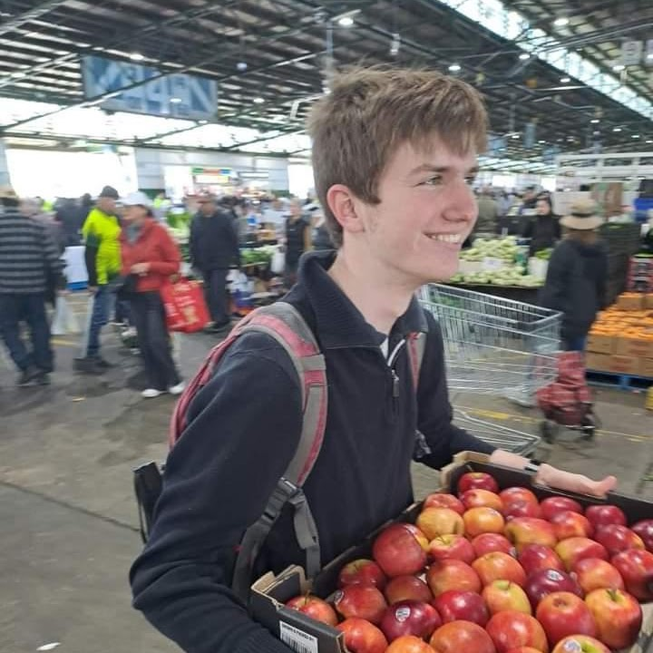
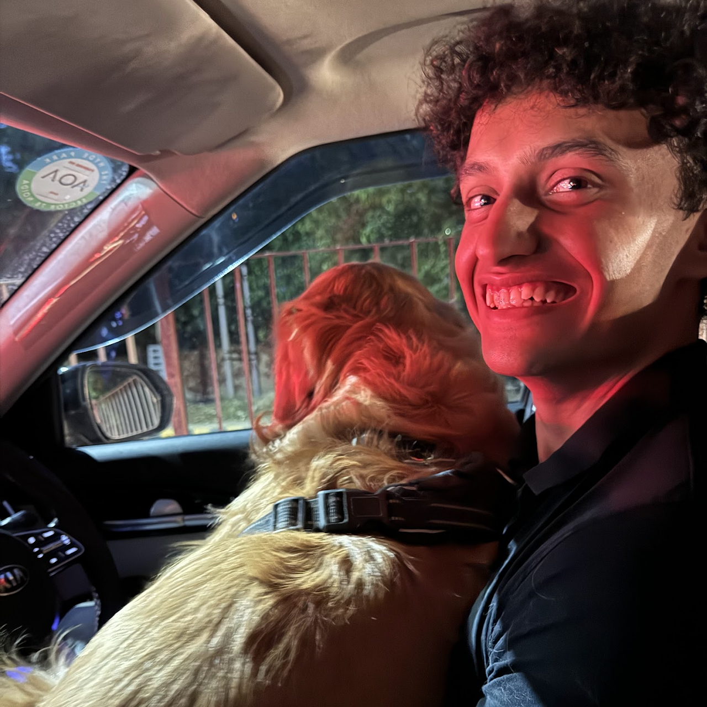
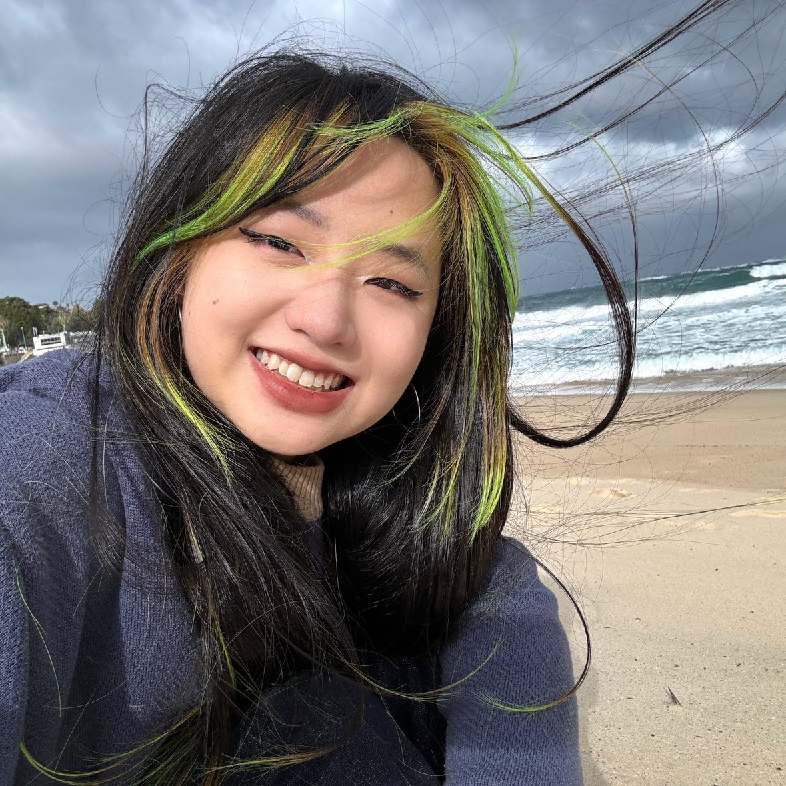
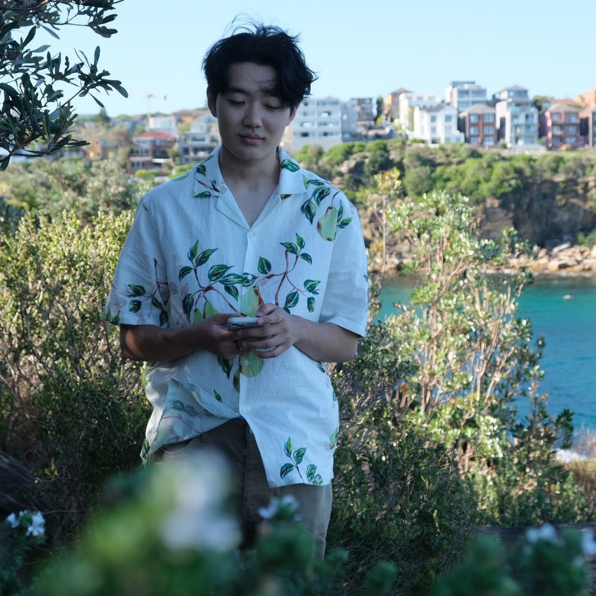
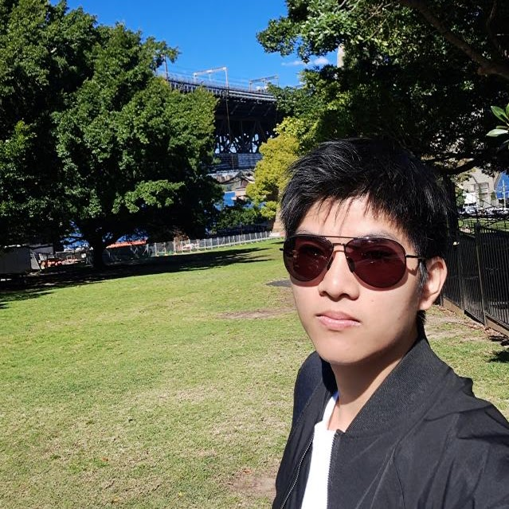
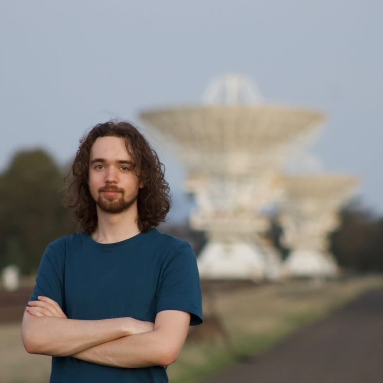
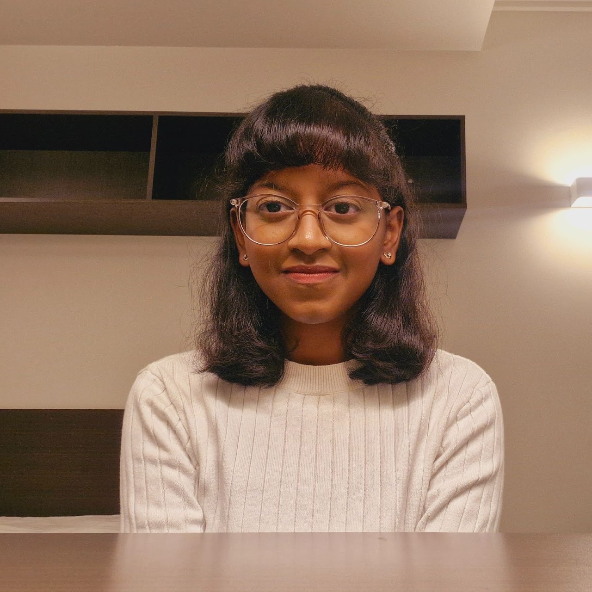
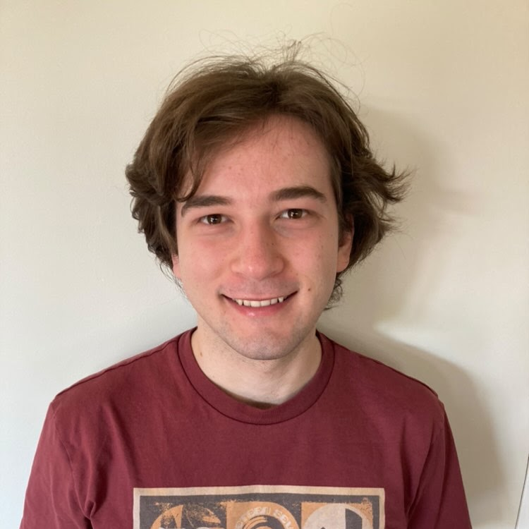
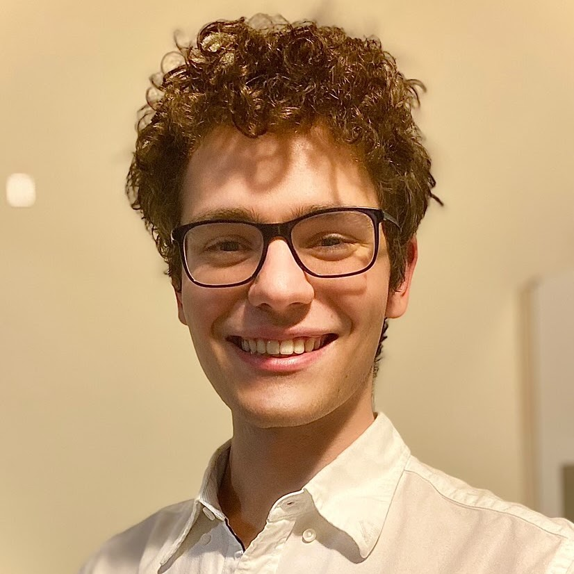
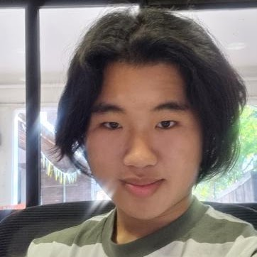

We are a group of students passionate about astronomy, astrophysics and all things space. We hold stargazing trips, where we go out to areas of low light pollution to look at the stars. We also run a few social events on campus.
Contact
If you have questions about our society, suggestions, events we’re holding, or transport to events, you can either email us or contact us on Facebook messenger. Make sure to follow us on Facebook and Instagram to keep up to date. We also have a Facebook group which we use to arrange transport.
Physics Building
The University of Sydney
Camperdown, NSW 2006
Australia


Who we are
Want to join the team? Participate in our next general meeting, no experience needed!

Benjamin O’Mara
President
Bachelor of Engineering Honours (Electrical)
I like to explore different suburbs around Sydney!

Krish Singh
Vice President
Bachelor of Engineering Honours (Mechatonic)
I have a dog who would sell me for a chicken leg

Mingyue (Becky) Yao
Secretary
Bachelor of Arts, majoring in Sociology and Digital Cultures
I am a cat person and not allergic to cats, but my cat is ’allergic‘ to people

Eugene Chon
Treasurer
Bachelor of Science and Advanced Studies (Physics and Mathematics)
I love amusement rides but am terrified of heights

Yanco Cheng
Events Coordinator
Bachelor of Architecture and Environments
Likes to cook western style dishes
Farra Nadeem
Media Coordinator
––

Jackson Mitchell-Bolton
General Executive
Bachelor of Science and Advanced Studies (Astrophysics Program and Mathematics Major, planning to do Honours in radio astronomy in 2025)
Current obsession: globular clusters

Ritambhara Ganesh
General Executive
Bachelor of Engineering (Honours) with Space Engineering (Aeronautical Stream) (Dalyell Scholar)
I’m a self-proclaimed Pluto rights activist

Dimitri Williams
General Executive
Bachelor of Science and Advanced Studies (Advanced) majoring in astrophysics first and chemistry second
My music taste ranges from ring leader of a circus telling stories to mysterious stranger singing sadly at campfire depending on my mood

Tobias McErlane
General Executive
Bachelor of Electrical Engineering/combined Bachelor of Physics
I like cooking… and eating

Christopher Eng
General Executive
Bachelor of Architecture and Environments
I came back from studying abroad in Korea recently